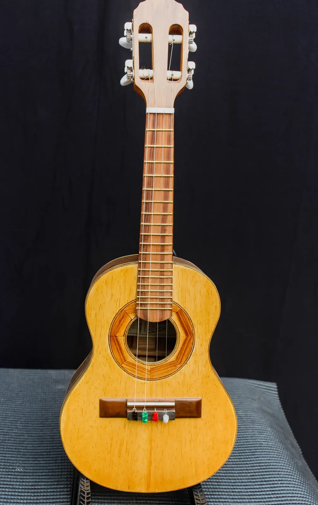

Araúna Cavaquinho

Madeiras
- Tampo
- Marupa
- Fundo e laterais
- Imbuia
- Braço
- Cedro
- Escala
- Pau Ferro
- Cavalete
- Pau Ferro
Componentes
- Tarraxas
- Tradicional, corpo metálico reforçado
- Filetes / marchetaria
- Marchetaria em madeira, aplicação manual
- Acabamento
- Goma Laca Indiana
- Trastes, nut e rastilho
- Nut e rastilho em osso legítimo
- Preço
- R$ 2.000,00
- Identificação
- BL-25-CV-001
Araúna leva o nome de uma ave lendária da floresta, conhecida pela plumagem escura e pelo canto que corta a mata mesmo à distância — uma boa metáfora para um cavaquinho que precisa se fazer ouvir em qualquer roda.
O tampo em marupá é uma escolha que aprendi a confiar ao longo dos anos: madeira leve, de grã fechada, que responde rápido ao ataque da palheta e devolve um som brilhante sem perder corpo. Fundo e laterais em imbuia trazem o grave presente que sustenta o instrumento no meio de outros violões e cavaquinhos, sem embolar o som. O braço em cedro maciço mantém o instrumento leve na mão, ideal para quem toca em pé, horas seguidas, em um samba ou num pagode.
Os filetes em marchetaria de madeira foram montados manualmente na bancada, e o acabamento em goma-laca indiana valoriza o desenho natural das fibras — dá pra ver a história da árvore só de olhar de perto. Tarraxas tradicionais completam um instrumento pensado pra durar: nut e rastilho em osso garantem sustain e afinação precisa nota após nota.
Um cavaquinho de trabalho, feito pra quem respeita a tradição e não abre mão de qualidade sonora real.